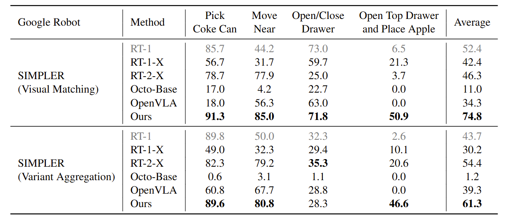
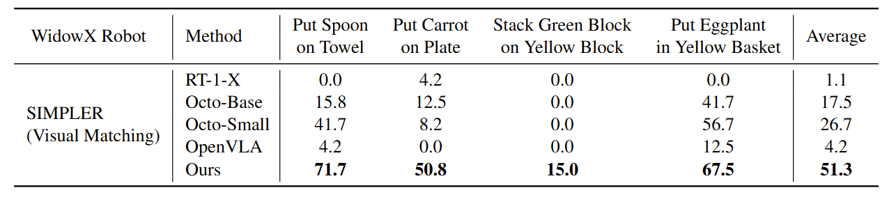
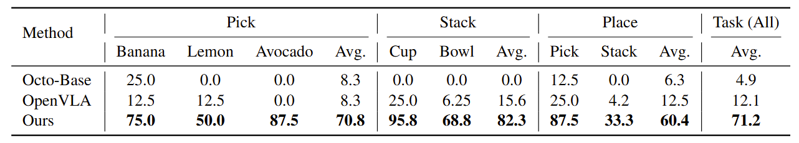
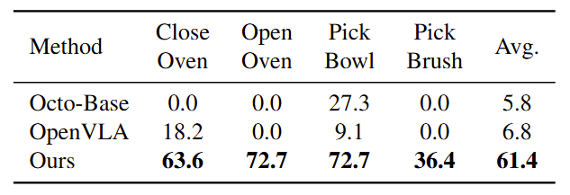
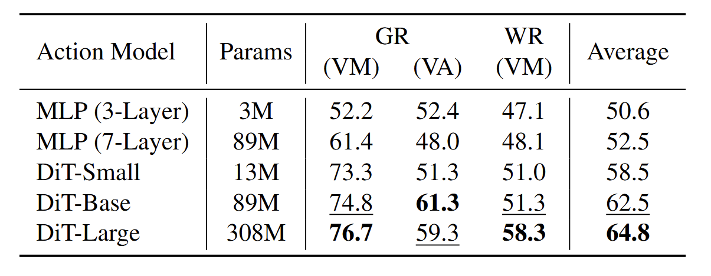
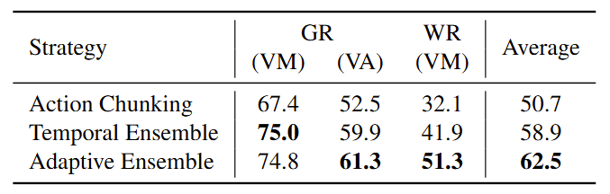

Experimental Results
Evaluation on SIMPLER
We first evaluate CogACT-VLA in the SIMPLER evaluation environment. This simulation platform is designed to bridge the real-to-sim control and visual gap for the Google robot and the WidowX robot. A strong correlation between the performance in SIMPLER and in the real world has been demonstrated by extensive evaluation of various VLA models. We compare CogACT-VLA with existing VLA models, including RT-1, RT-1-X, RT-2-X, Octo, and OpenVLA.
SIMPLER offers two evaluation settings: Visual Matching, which closely replicates the scene appearance of real-world tasks, and Variant Aggregations, which introduces variations by modifying the background, lighting, distractors, table textures, etc.
|

Evaluation and comparison on SIMPLER's Google robot tasks. All models are trained on the OXE dataset (except for RT-1 which is trained only on OXE's Google robot subset). |
|

Evaluation and comparison on SIMPLER's WidowX robot tasks. |
The results show that CogACT-VLA outperforms existing VLA models on both the Google robot and the WidowX robot tasks by a large margin.
Real-world Evaluation with Realman Robot
We evaluate CogACT-VLA with a Realman robot to perform real-world tasks such as picking, stacking, and placing various colored objects. We collected a dataset with 391 demonstrations in total and finetune different models. As shown in the table below, our model outperforms OpenVLA and Octo-Base and achieves the highest average success rates.
|

Real-world evaluation with the Realman robot across three tasks, each with 20-40 trials of random configurations. All models are pretrained on OXE and finetuned on the same data. |
Generalization Capability - Unseen Tables with Unseen Distractors

Generalization evaluation on the Realman Robot with unseen tables and distractors. |
Generalization Capability - Unseen Colors, Shapes, and Categories.

Generalization evaluation on the Realman Robot with unseen colors, shapes, and categories. |
Real-World Evaluation with Franka Robot
We further use an Franka arm to evaluate our model's real-world performance and compare it with previous methods. Similar to the experiments on the Realman robot, we collect training data and finetune different models for evaluation.
|

Real-world evaluation on the Franka Robot across four tasks. All models are pretrained on OXE and finetuned on the same data. |
Video Result Samples
Realman Robot
Franka Robot
Google Robot (in SIMPLER)
Pick Coke can.
Move Pepsi can near orange.
Close bottom drawer.
Open top drawer; Place apple into top drawer.
WidowX Robot (in SIMPLER)
Put carrot on plate.
Put the spoon on the towel.
Stack the green block on the yellow block.
Put eggplant into yellow basket.
Ablation Study
Action Model Scaling
We evaluate various action model architectures on Google Robot (GR) and WidowX Robot (WR) in SIMPLER. The architectures examined include MLPs with depths of 3 and 7 layers, respectively, as well as a series of DiT of varying sizes. The results show that both MLP and DiT structures show improved success rates with increased model size, and DiT significantly outperforms MLP. Notably, DiT-Large achieves the highest average success rate of 64.8%. The average success rate of transformers is approximately linearly related to the logarithm of the model size, indicating a favorable scaling behavior of the action module with diffusion transformers.
|  |
Adaptive Action Ensemble
We evaluate the proposed Adaptive Action Ensemble approach against the two ensemble strategies introduced in ACT – Action Chunking and Temporal Ensemble. The results show that our proposed Adaptive Ensemble outperforms others, and we attribute this to the efficacy of our adaptive similarity weighting between the current and historical predictions.
|  |